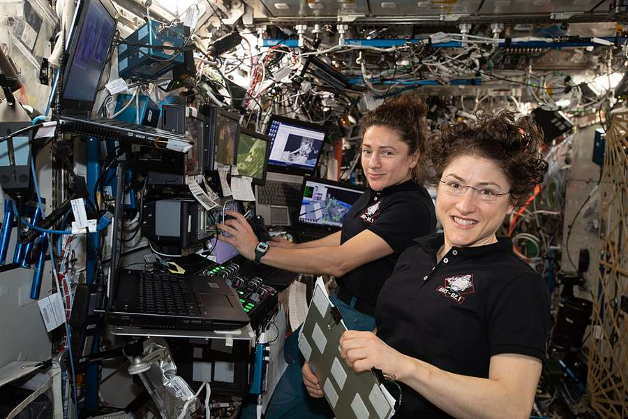
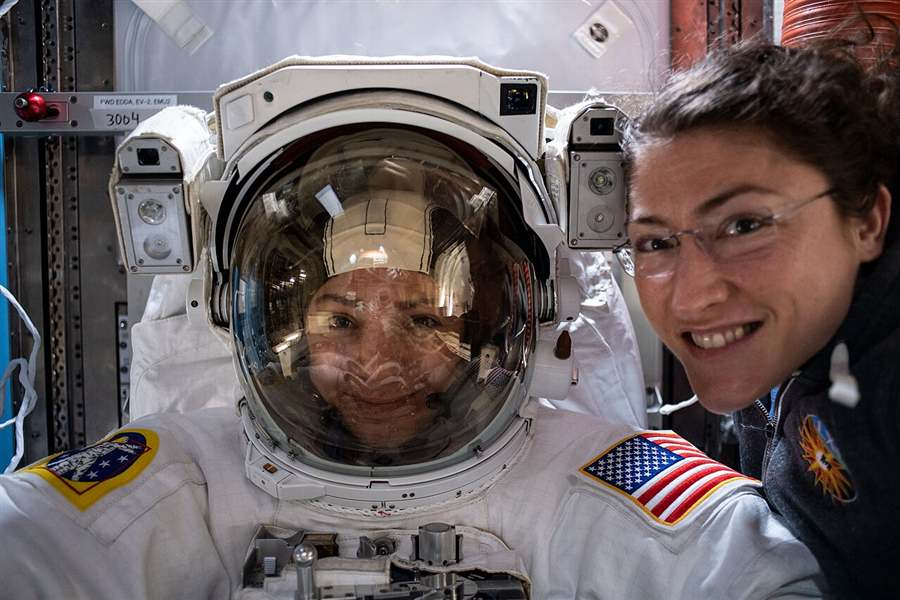
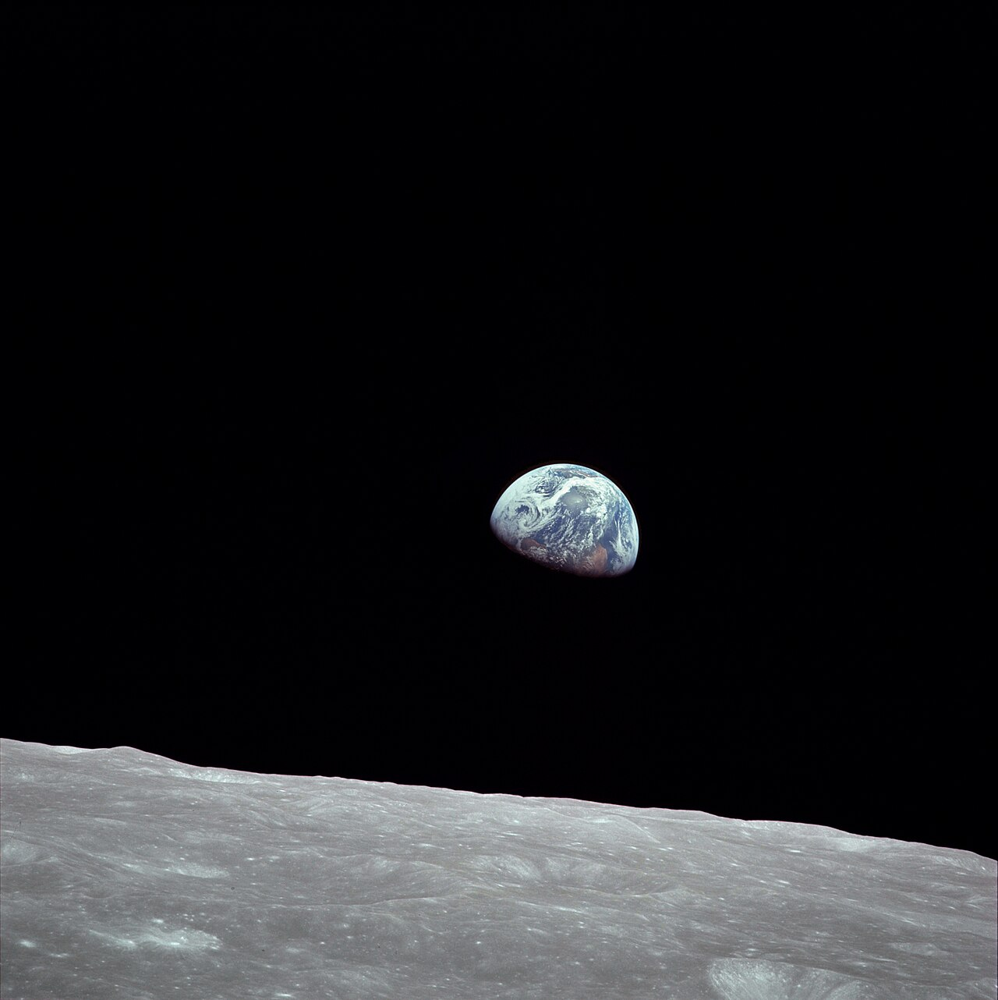
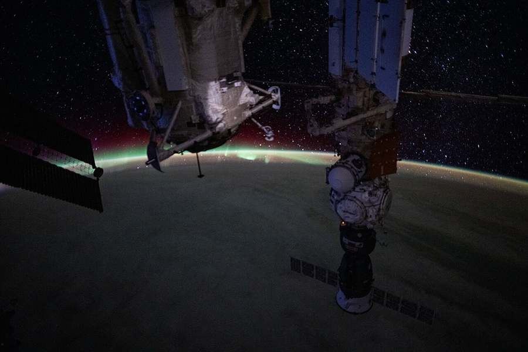
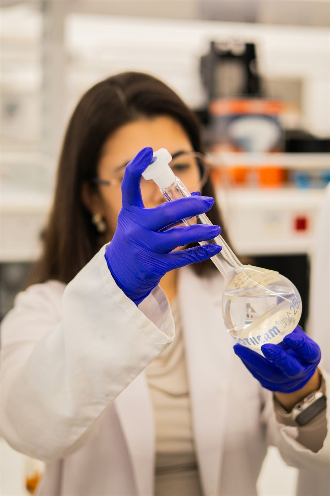
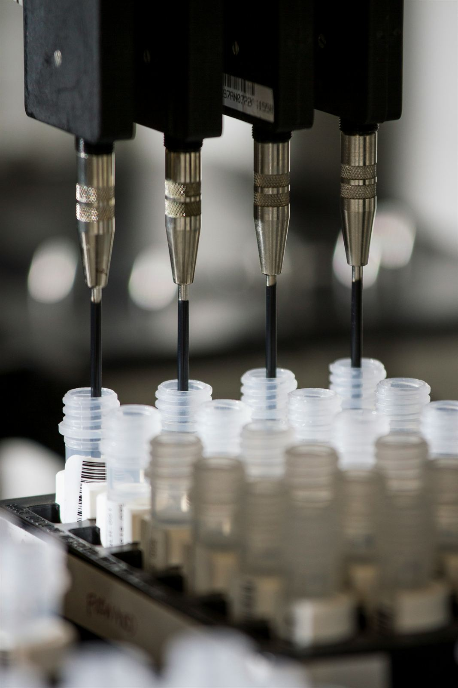
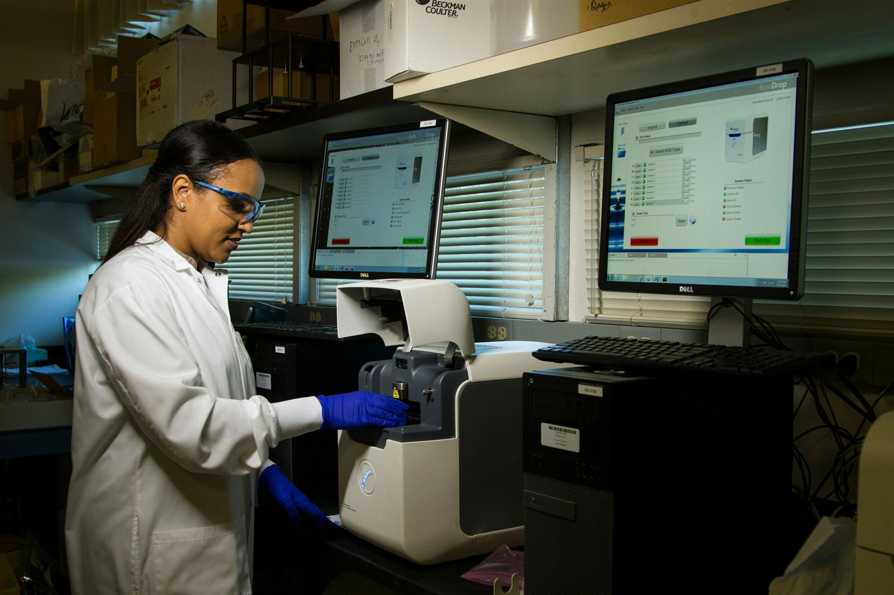
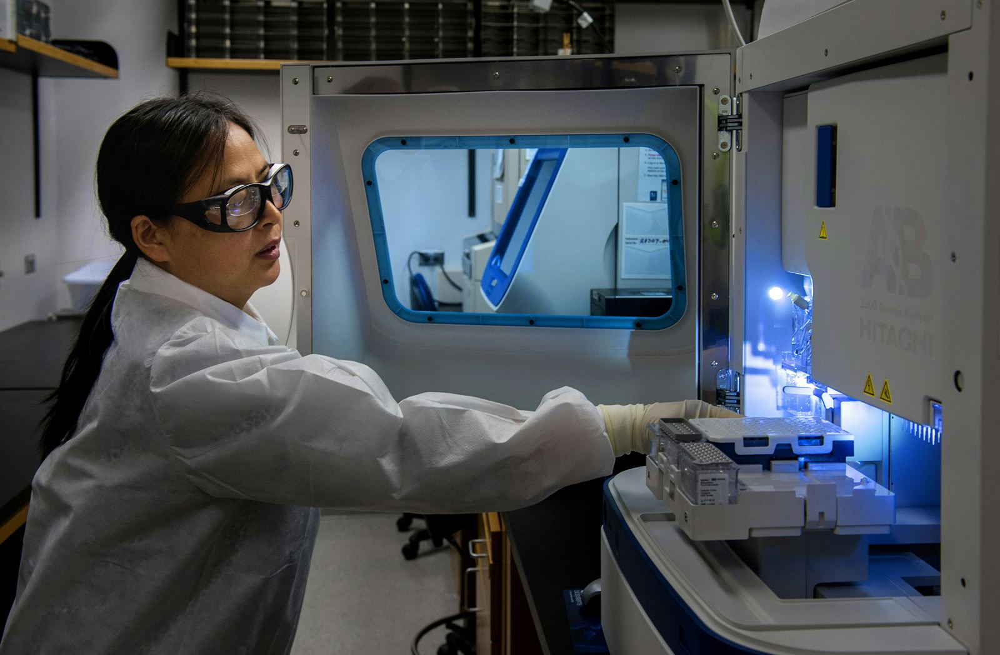
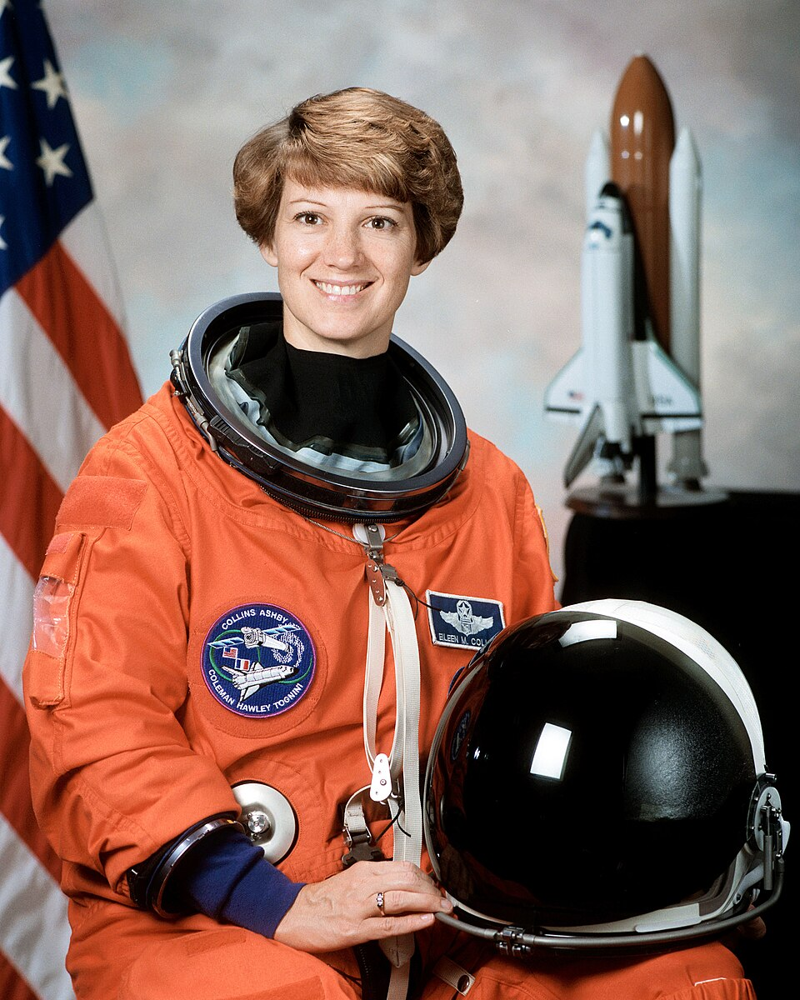
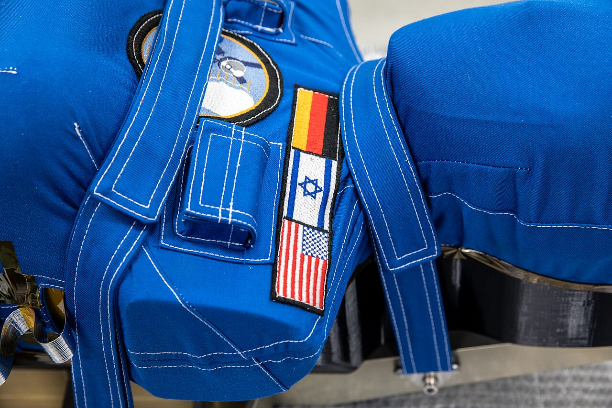

Equipping women to better access, endure & thrive in space.
Adrastea is a youth-led accelerator and collaboration hub dedicated to advancing women in space through research and advocacy.
ADRASTEA
ad astra, for all.
Adrastea is a youth-led accelerator and collaboration hub dedicated to advancing women in space through research and advocacy.




Women’s health in space needs more than one kind of expertise. We don’t just identify the gaps. We build the research, projects, and partnerships that close them.

Hibernation, cycle tracking, and the neuroscience of spaceflight.

A microgravity menstrual cup, and satellite maps of period poverty.
Menstrual health advocacy, and a voice for under-18s in space policy.
Three research divisions and one media division, pairing young researchers with senior scientists, engineers, and policymakers.
How the female body responds to spaceflight.
Wearable health tech, next-generation spacesuits, and alternatives to menstrual suppression in orbit.
Removing the systemic, regulatory, and ethical barriers to women in space.
Scientific Media & Marketing turns research and advocacy into stories that reach the public.

For researchers, clinicians, and students.
Explore
For engineers, designers, and biotech minds.
ExploreFor policy, law, and ethics experts.
ExploreFor science communicators, writers, designers, and video creators.
ExploreSix decades of women in space, and of the research catching up with them.
Valentina Tereshkova orbits Earth 48 times aboard Vostok 6.
 1983
1983
Sally Ride flies on the Space Shuttle Challenger.
Mae Jemison, physician and engineer, flies aboard Endeavour.
A US law requires women to be included in NIH-funded clinical research.

1999Eileen Collins leads a Space Shuttle mission.
NASA reviews how women’s and men’s bodies adapt to spaceflight, and how thin the data is.
Christina Koch and Jessica Meir step outside the International Space Station.

2022Two phantom torsos modelled on the female body, Helga and Zohar, fly around the Moon on Artemis I.
The next chapter is ours to write. Ad astra, for all.
NASA, Harvard, Columbia, MIT, Oxford, Stanford, the University of Arizona, Mayo Clinic, Virginia Tech, Rutgers, and IEEE.
Young researchers, senior scientists, engineers, and policymakers. One mission.